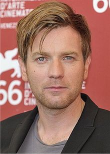

Reparto
Hayden Christensen

Hayden Christensen es un actor y productor de cine y televisión canadiense. Saltó a la fama
internacional por su interpretación de Anakin Skywalker / Darth Vader en Star Wars. También fue nominado
a los Globos de Oro y al Premio del sindicato de Actores por su papel de Sam en Life as a House.
Ewan McGregor

Ewan Gordon McGregor es un actor británico, principalmente famoso por haber protagonizado la película de
culto Trainspotting (1996), las películas románticas de Hollywood Moulin Rouge (2001) y Abajo el amor
(2003), y por haber interpretado a Obi-Wan Kenobi en los tres primeros episodios de la saga Star Wars.
Entre sus papeles cinematográficos, ha interpretado a personajes musicales, por lo que ha grabado y
colaborado en diferentes bandas sonoras.
Natalie Portman

Natalie Portman es una actriz, escritora, directora, bailarina, productora de cine y psicóloga israelí
nacionalizada estadounidense. Es una de las pocas actrices que ha ganado los cuatro premios más
importantes del cine por una misma película: el Óscar (Mejor Actriz), el BAFTA ( a la mejor actriz), el
Globo de oro (a la mejor actriz en un drama) y el Premio del Sindicato de Actores (a la mejor actriz
protagonista) por su trabajo en Black Swan (2010) del director Darren Aronofsky.
Ian McDiarmid
Ian McDiarmid es un actor y director de teatro escocés. Es ampliamente conocido por interpretar al
villano Palpatine, alter ego de Darth Sidious en la franquicia Star Wars.
Samuel L. Jackson

Samuel Leroy Jackson conocido como Samuel L. Jackson, es un
actor y productor de cine, televisión y teatro estadounidense. Ha sido candidato al premio Óscar, a los
Globos de Oro y al Premio del Sindicato de Actores, así como ganador de un BAFTA al mejor actor de
reparto.1